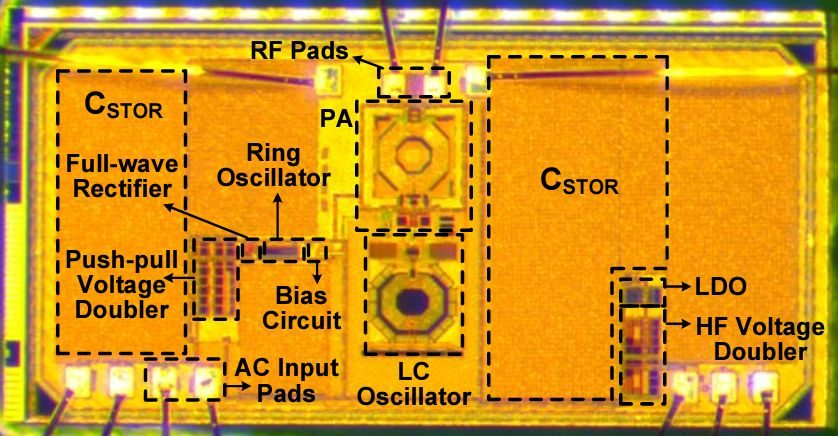
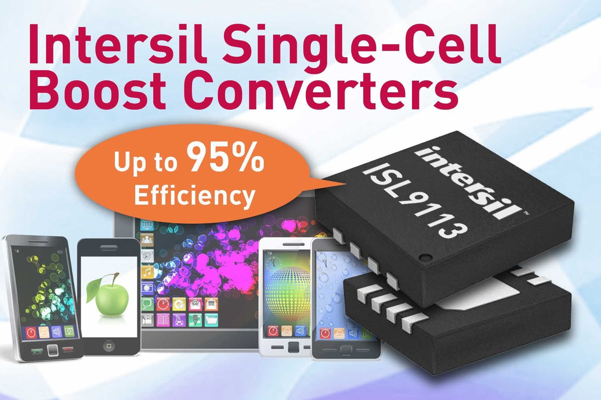
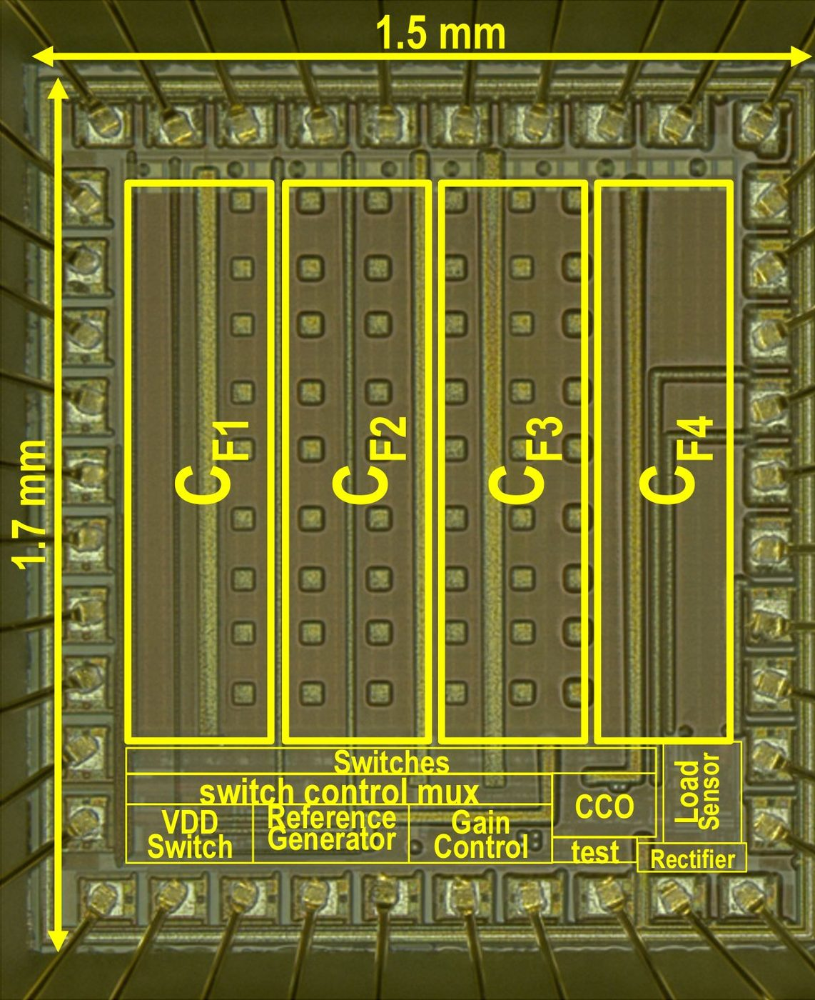
About & Track Record
Mahmoud Saadat — Founder, Efficiently
Twenty years shipping Physical AI — from power ICs and energy-harvesting silicon, through robotaxi hardware, to co-founding an imaging radar company and leading SDV compute platforms. Efficiently is the advisory and investment practice built on that arc: system-level efficiency, product strategy, hiring, and fundraising for teams that have to work in the real world.
The Arc
Physics, cost, and time-to-market bind at every layer — silicon, vehicle, radar, and fleet compute.



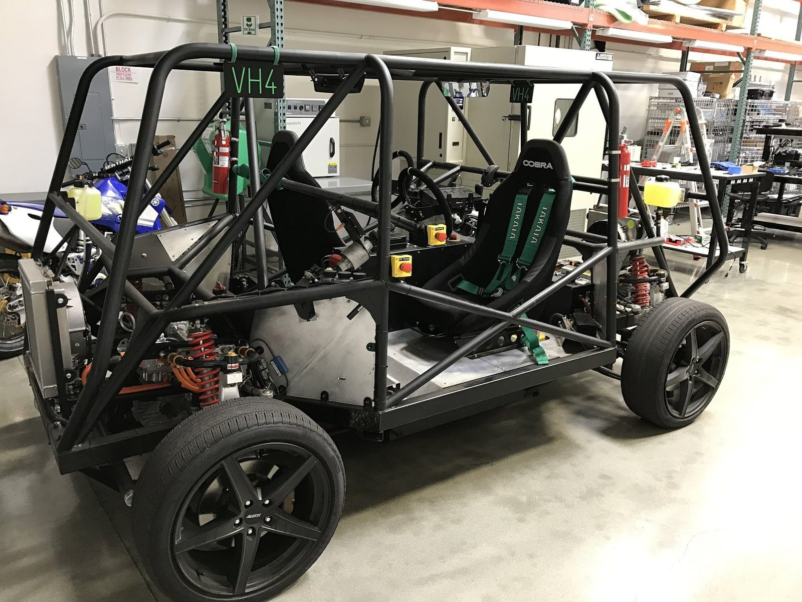
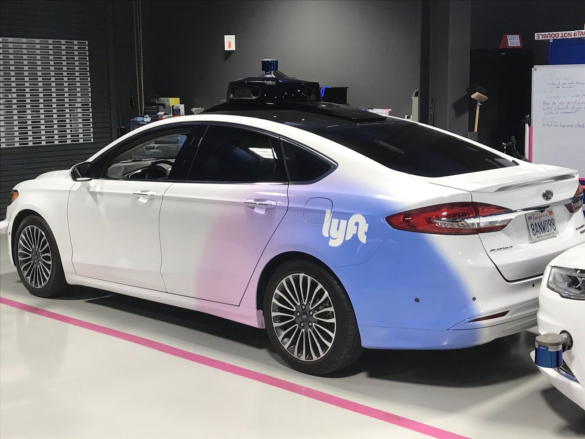
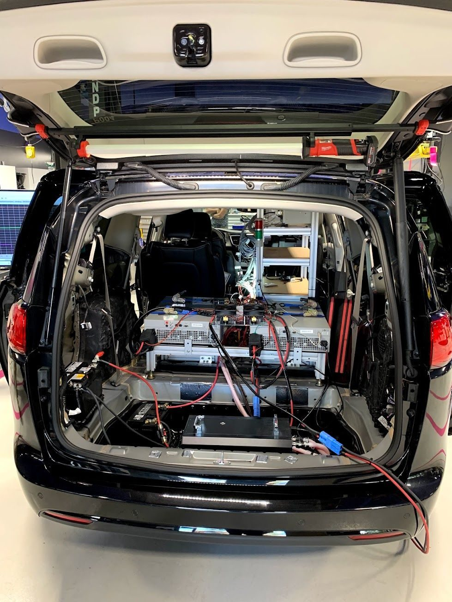
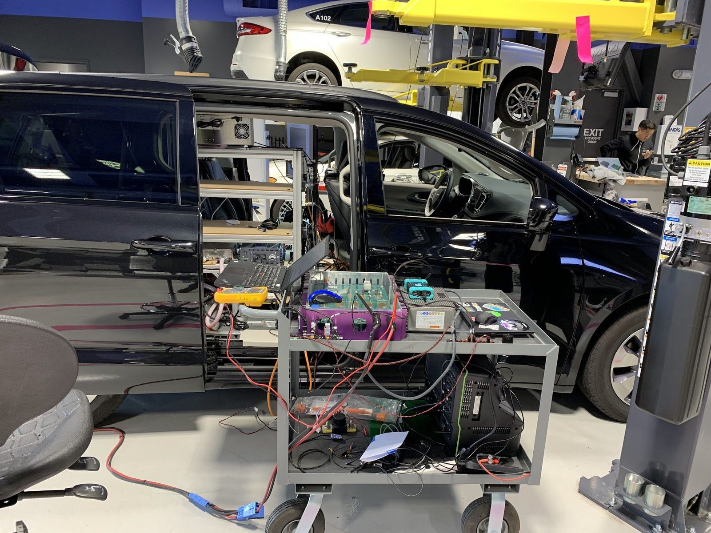
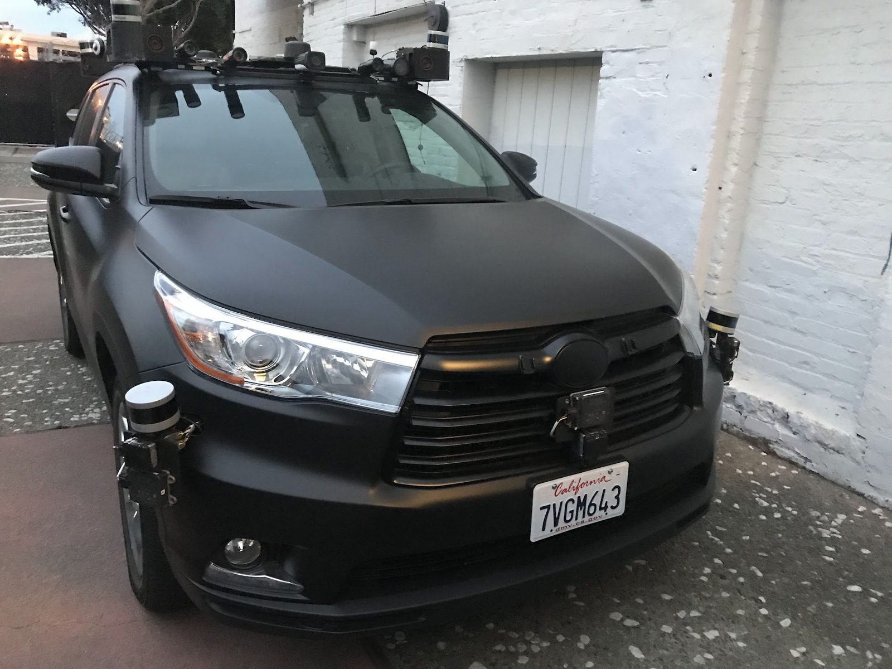
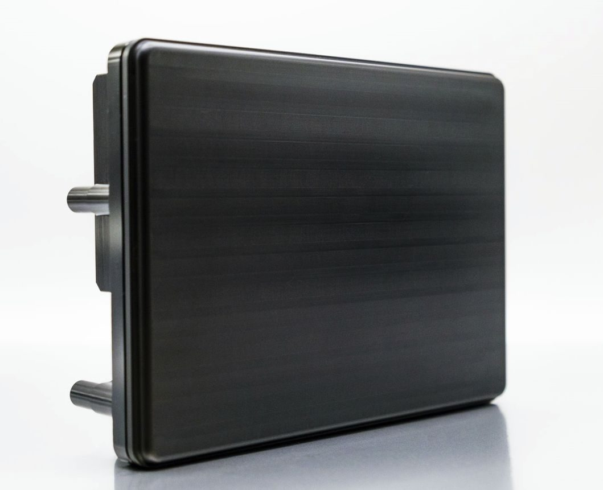
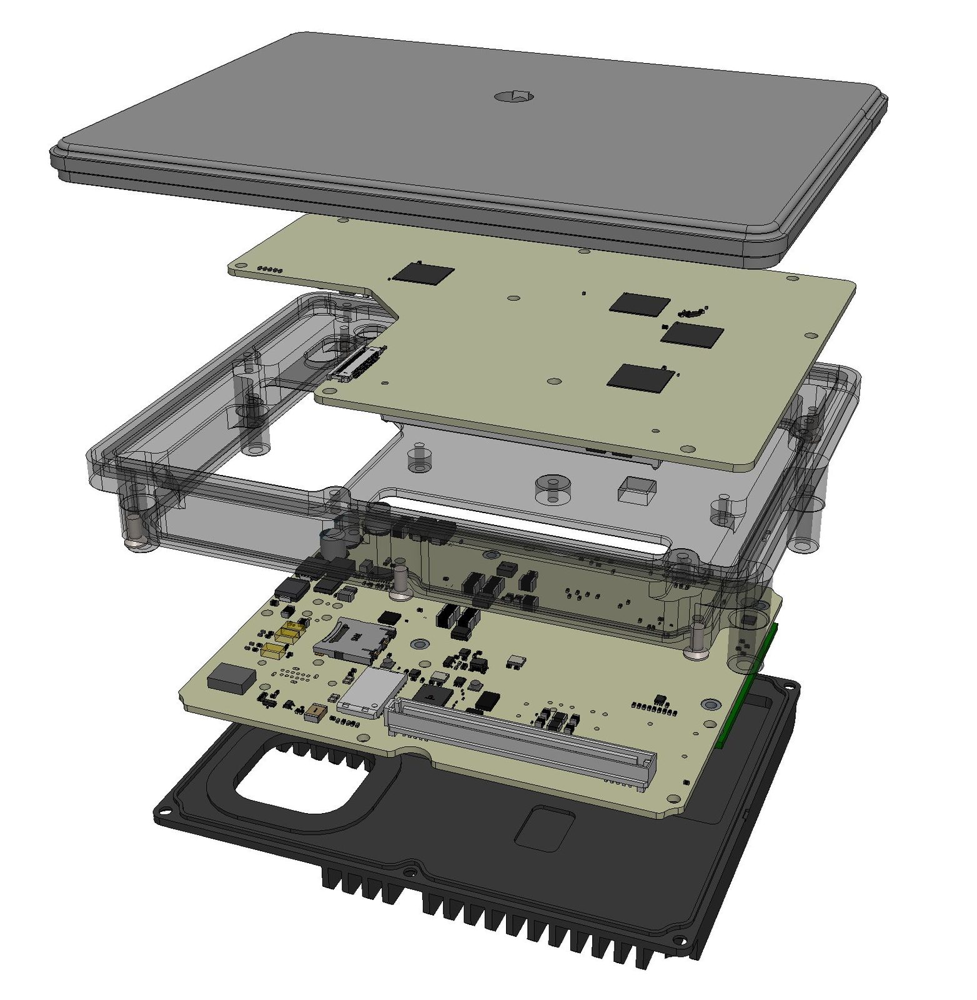
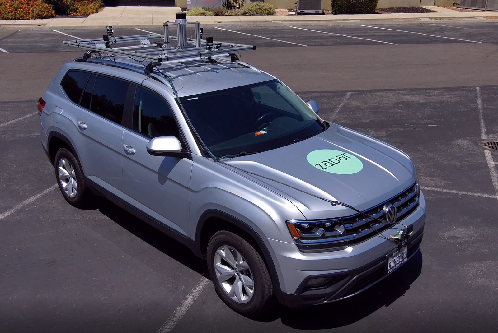
Track Record
CEO and Chief Architect through zero-to-one: vision, roadmap, and execution across hardware and software for high-resolution 4D imaging radar.
Head of Hardware for state-of-the-art compute platforms — automotive, trucking, and heavy machinery — where reliability and program velocity matter as much as peak performance.
Fleet-grade AV hardware: power distribution, sense and compute contributions, and hardware development / validation leadership under real vehicle constraints.
Credentials
Building in robotics, autonomy, industrial AI, or other physical-world systems — we can help compress risk and time.
Start a Conversation →